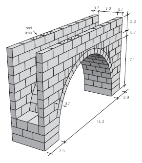
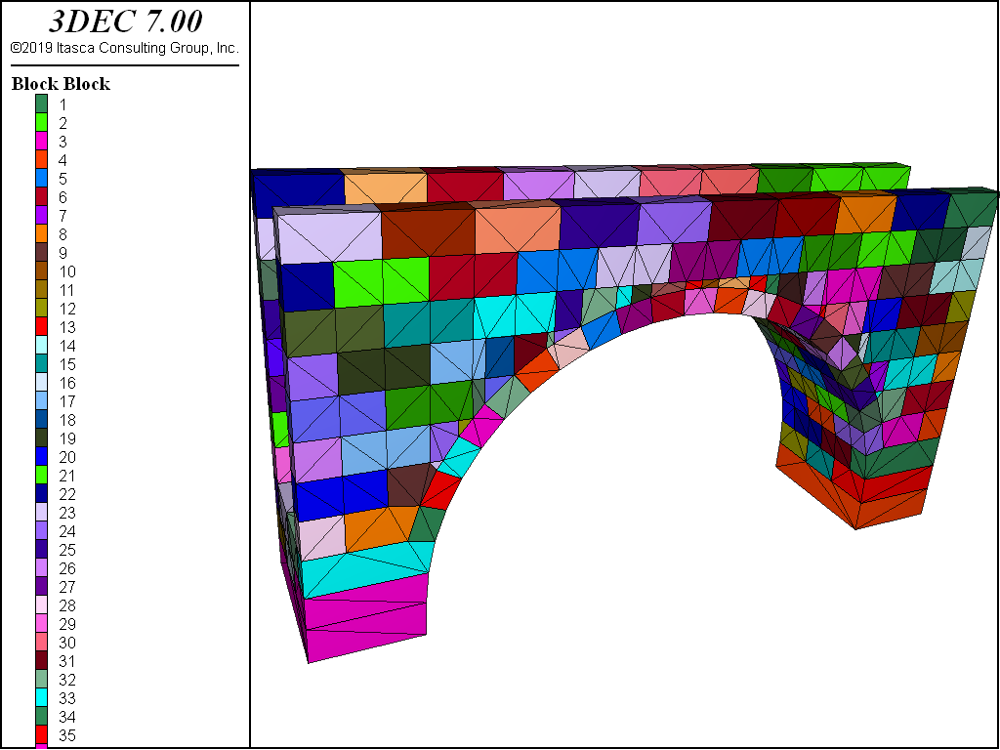
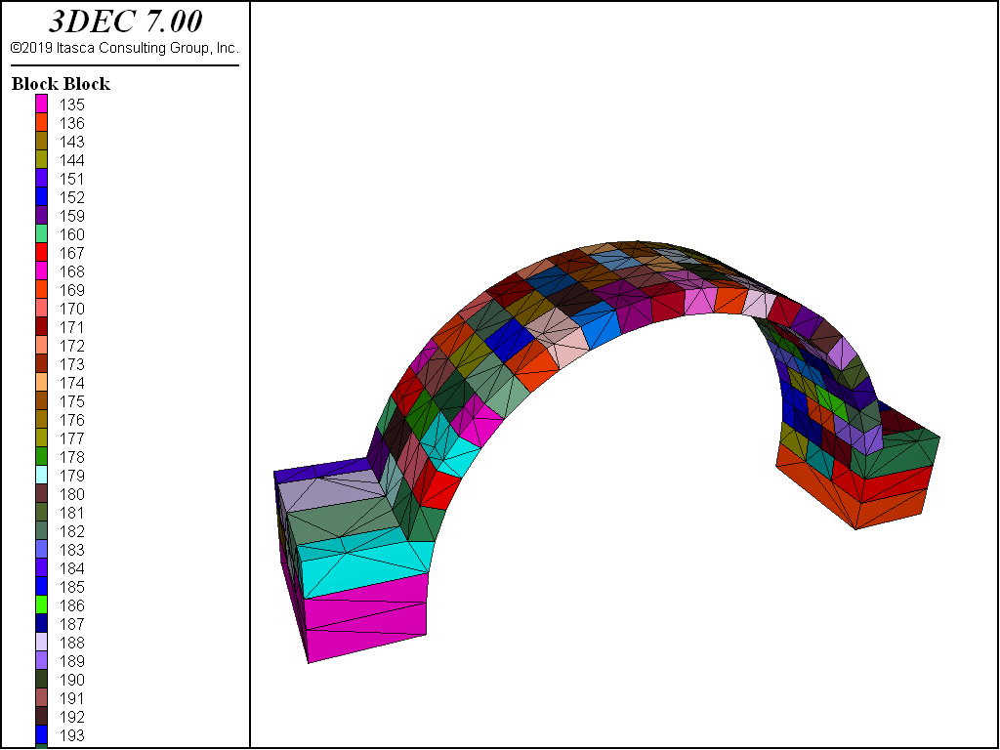
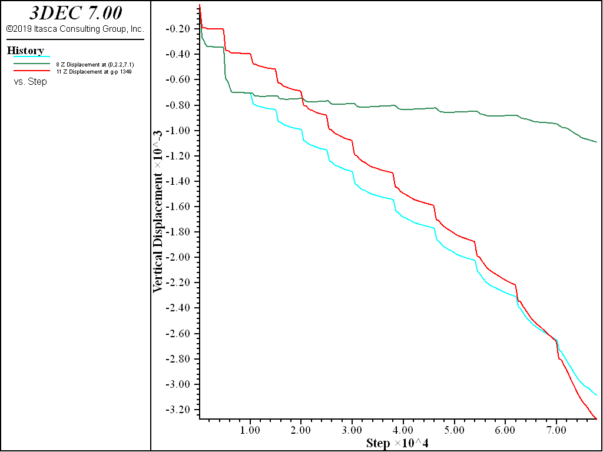
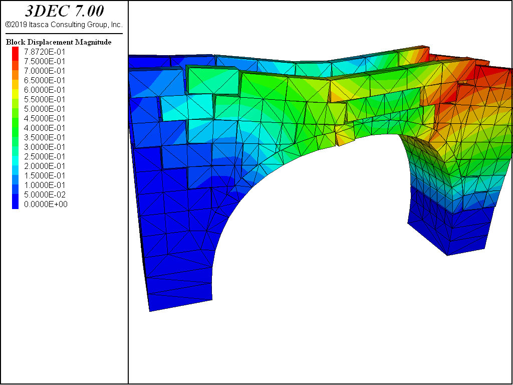

拱桥的公路荷载
问题描述
注意
要在 3DEC 中查看此项目，请使用菜单命令 。选择“3DEC/ ExampleApplications/ bridge”，然后选择“bridge.prj”进行加载。所用的主数据文件（main data file）显示在本示例的末尾。所有数据文件都可在该项目中找到。
老旧砌体桥梁的安全状况评估尤为重要，因为这些桥梁往往需要承受比过去更大的荷载。本示例说明了应用 3DEC 评估砌体拱桥极限荷载的方法。离散元分析特别适合此类问题，因为相当一部分变形是由构成桥梁的砌体块体之间的相对运动引起的。有关本研究的更多细节，见 Lemos（1995）的论文。
本问题需要确定包含半圆拱券和拱肩墙的砌体桥梁的极限承载力（见图 1（Figure 1））。本示例桥梁的尺寸如图所示。注意，墙内的填土材料未绘出。代表公路交通的活荷载通过拱肩墙传递至拱背。本示例分析采用非对称加载，即将合力荷载居中作用于其中一面墙上。荷载逐级增加直至发生破坏。

图 1：砌体拱桥——拱券与拱肩墙。
建模步骤
本示例的 3DEC 模型如图 2（Figure 2）所示。为缩短计算时间作了一些简化。例如，填土材料用施加在拱块上的恒载表示。拱肩墙首先通过 block cut joint-set 命令切割两个大块体（包含墙体）来生成。随后用 block create prism 命令创建与拱相邻的墙体块体。拱和基础块体同样用 block create prism 命令创建。拱由 75 个块体组成，可相当准确地表示破坏机制。完整模型由 247 个块体组成。图 2（Figure 2）显示完整模型，图 3（Figure 3）显示拱和基础块体。拱和基础范围内的块体赋予组名 \(arch1\)、\(arch2\) 和 \(foundation\)；拱肩墙内的块体赋予区域编号 \(wall1\)、\(wall2\) 和 \(wall3\)。
所有块体均设为可变形并采用较粗的网格。假定块体保持弹性，唯一的破坏机制为节理滑动和张开。未考虑节理处或荷载作用下的压碎破坏。
对块体和节理假定以下属性：
| 砌体块 | |
| 杨氏模量 | 50 GPa |
| 泊松比 | 0.2 |
| 砌体节理 | |
| 法向刚度 | 50 GPa/m |
| 剪切刚度 | 20 GPa/m |
| 摩擦角 | 30° |
| 黏聚力 | 0 |
| 抗拉强度 | 0 |
下部桥台块体的底面在所有方向上固定不动。拱肩墙在水平方向不受约束。
模型首先在重力荷载下达到平衡。然后将墙内填土材料作为恒载施加。最后，活荷载表示为分布在拱肩墙顶部选定区域上的力。活荷载的合力居中作用于一面墙上，以形成非对称加载。初始活荷载对应于 600 kN 的力。该力以 600 kN 为增量增加，直至发生倒塌。


图 2：砌体拱桥的 3DEC 模型。


图 3：砌体拱桥的 3DEC 模型——仅为拱和基础块体。
结果
桥梁的极限荷载通过在施加荷载下方拱上某点监测的 \(y\) 位移时程来确定。图 4（Figure 4）中所示的 \(y\) 位移曲线表明，当施加的活荷载达到 6000 kN 时，开始出现持续向下的位移。
图 5（Figure 5）显示了桥梁在较晚阶段倒塌机制的发展。在这一后期阶段，荷载正下方的块体发生脱离。
在 Lemos（1995）报告的分析中，拱肩墙的影响被证明是显著的。拱肩墙既提高了抵抗破坏荷载的能力，又使体系刚度增加。
对砌体墙式桥梁还进行过其他 3DEC 分析，包括地震效应的评价。例如见 Lemos（1996 和 1997）。
参考文献
Lemos, J. V. “Assessment of the Ultimate Load of a Masonry Arch Using Discrete Elements,” in Computer Methods in Structural Masonry – 3, G. N. Pande and J. Middleton, eds. Books & Journals Int., pp. 294-302 (1995).
Lemos, J. V. “Discrete Element Modelling of Historical Structures,” in Proc. Int. Conf. New Technologies in Structural Engineering, S. P. Santos and A. M. Baptista, eds. LNEC, Lisbon, Vol. 2, pp. 1099-1106 (1996).
Lemos, J. V. “Discrete Element Modelling of the Seismic Behaviour of Stone Masonry Arches,” Computer Methods in Structural Masonry – 4, G. N. Pande, J. Middleton and B. Kralj, E&FN Spon, London, pp. 220-227 (1997).


图 4：施加荷载下方点（−3.8,6,−2.2）处的 z 位移。


图 5：桥梁的破坏。
数据文件
bridge.dat
model new
model large-strain on
; 砌体拱桥
block create brick -10 10 -2.2 -1.5 1.94 10
block create brick -10 10 1.5 2.2 1.94 10
; 创建拱上侧墙块体 --------------
block cut joint-set ori 0 0 3
block cut joint-set ori 0 0 4
block cut joint-set ori 0 0 5
block cut joint-set ori 0 0 6
block cut joint-set ori 0 0 7
block cut joint-set ori 0 0 8
block cut joint-set ori 0 0 9
;
block group 'wall1' range position-z 0 3
block group 'wall2' range position-z 3 4
block group 'wall1' range position-z 4 5
block group 'wall2' range position-z 5 6
block group 'wall1' range position-z 6 7
block group 'wall2' range position-z 7 8
block group 'wall1' range position-z 8 9
block group 'wall2' range position-z 9 10
;
block hide range group 'wall1'
block cut joint-set dip 90 dip-direction 90 orig 0 0 0 spacing 2
block hide range group 'wall2'
block hide off range group 'wall1'
block cut joint-set dip 90 dip-direction 90 orig -1 0 0 spacing 2
block hide off
;
;
block delete range position-x -9 9 position-z 2 3
block delete range position-x -8 8 position-z 3 4
block delete range position-x -7 7 position-z 4 5
block delete range position-x -6 6 position-z 5 6
block delete range position-x -5 5 position-z 6 7
block delete range position-x -4 4 position-z 7 8
block delete range position-x -8 8 position-z 5 6
block delete range position-x -7 7 position-z 6 7
;
program call 'wall'
;
;
block hide range group 'wall3'
;
; 创建拱和基础块体 ---------------------------
program call 'arch'
;
block hide range group 'foundation'
;
block hide range group 'arch1'
block cut joint-set dip 90 dip-direction 0 ori 0 0 0
block cut joint-set dip 90 dip-direction 0 ori 0 -1.5 0
block cut joint-set dip 90 dip-direction 0 ori 0 1.5 0
;
block hide range group 'arch2'
block hide off range group 'arch1'
block cut joint-set dip 90 dip-direction 0 ori 0 -0.7 0
block cut joint-set dip 90 dip-direction 0 ori 0 0.7 0
;
block hide off
;
model save 'arch-blocks'
==============================================
;
block zone generate edgelength 10
;
;
block zone cmodel assign elastic
block zone property density 0.0027 bulk 20833 shear 22727
block contact jmodel assign mohr
block contact property stiffness-normal 50000 stiffness-shear 20000 friction 30
block contact material-table default property stiffness-normal 50000 ...
stiffness-shear 20000 friction 30
;
model gravity 0 0 -10
block gridpoint apply velocity 0 0 0 range position-z -1.1 -0.9
;
model history mechanical unbalanced-maximum
model history damping
block history displacement-x position 0 -2.2 7.1
block history displacement-y position 0 -2.2 7.1
block history displacement-z position 0 -2.2 7.1
block history displacement-x position 0 2.2 7.1
block history displacement-y position 0 2.2 7.1
block history displacement-z position 0 2.2 7.1
block history displacement-x position -3.5 -2.2 6
block history displacement-y position -3.5 -2.2 6
block history displacement-z position -3.5 -2.2 6
history interval 100
;
model save 'arch-zoned'
;
; --- 重力 ---
;
model solve
model save 'arch-gravity'
;
; -----------------------------------------------------------
; --- 填料重量 ---
;
block face apply stress 0 0 -0.22 0 0 0 gradient-z 0 0 0.022 0 0 0 ...
range position-x -7.57 7.57 cylinder end-1 0 -1.52 0 ...
end-2 0 1.52 0 radius 7.78 7.82
;
block face apply stress 0 0 -0.22 0 0 0 gradient-z 0 0 0.022 0 0 0 ...
range position-x -11 -7.52 position-y -1.52 1.52 ...
position-z 1.92 1.96
;
block face apply stress 0 0 -0.22 0 0 0 gradient-z 0 0 0.022 0 0 0 ...
range position-x 7.52 11 position-y -1.52 1.52 ...
position-z 1.92 1.96
;
model solve
model save 'arch-loaded'
;
; -----------------------------------------------------------
; --- 其中一道侧墙上的荷载 ---
; 逐步增大至破坏
;
;
fish def load1
loop local i (1,4)
fname = 'arch-'+string(i)
command
block face apply stress 0 0 -0.21428 0 0 0 ...
range position-x -6.1 -1.9 position-y -2.3 -1.4 ...
position-z 9.8 10.1
model cycle 5000
model save [fname]
end_command
end_loop
end
[load1]
;
fish def load2
loop local i (5,10)
fname = 'arch-'+string(i)
command
block face apply stress 0 0 -0.21428 0 0 0 ...
range position-x -6.1 -1.9 position-y -2.3 -1.4 ...
position-z 9.8 10.1
model cycle 8000
model save [fname]
end_command
end_loop
end
[load2]
;
model cyc 800000
model save 'arch-fail'
;
program return
| 这些内容对您有帮助吗？… | FLAC3D © 2019, Itasca | 原文更新于 2020 年 10 月 8 日 |
| 版权与免责声明 | ||